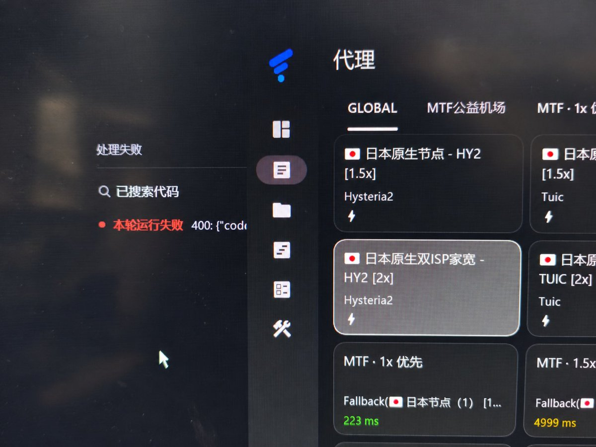

cjy
@fcjdfb
@Shioochicqwq 依旧mtf机场

汐落
@Shioochicqwq
我草了这才用几天，谷歌就给我一个号固定报 400 了，倒是没封。每次调用就会响应一会，二十多秒之后就报 400，搞的我还以为牢唐的机场脏了，然后白给了 tagss 92 块钱换别的节点发现还是没用，换个号立马好了😭
我真气死了，谷➗啊😭👊
非要把 gemini 绑定在那个垃圾 antigravity 里，还不让反代😅 https://t.co/jZTVTiY1GX